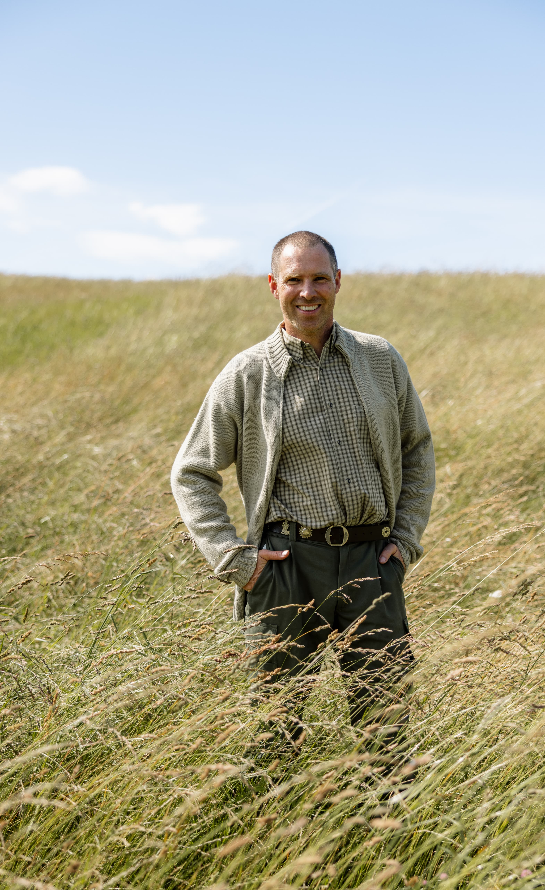
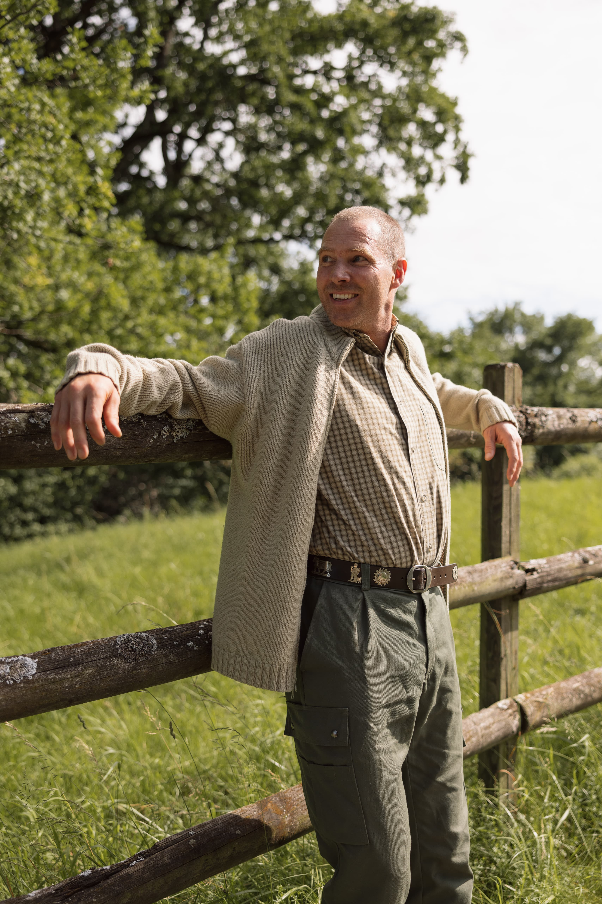
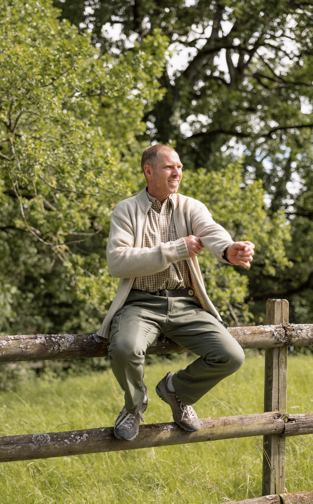
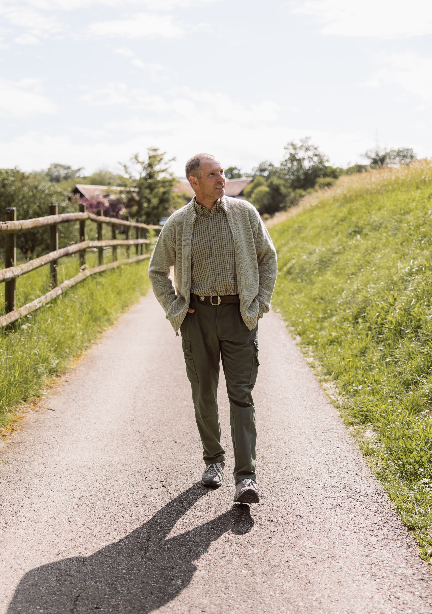
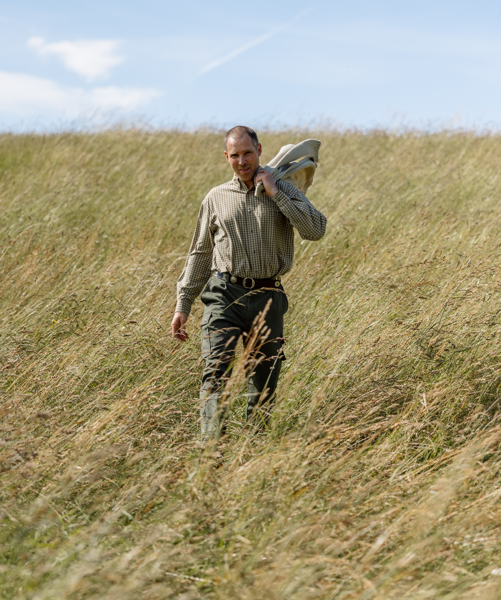
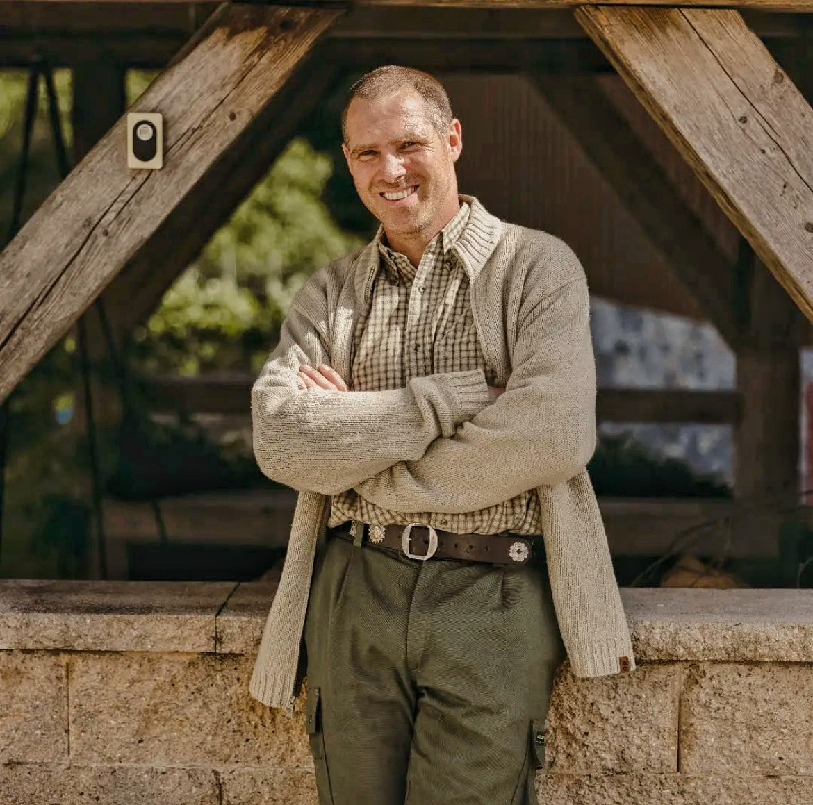

Ferme familiale · Montherod, Vaud
Walter Steiner cultive sa terre depuis plus de 20 ans avec une conviction simple : les meilleurs aliments naissent de sols vivants, travaillés avec respect et passion.




L'homme derrière la ferme
Agriculteur à Montherod depuis plus de 20 ans, Walter Steiner est une figure rare dans le monde agricole vaudois. Son approche est simple et radicale à la fois : produire les meilleurs aliments possibles, en harmonie totale avec la nature.
Père de cinq enfants, il consomme avec sa famille tout ce que produit la ferme. C'est sa meilleure garantie qualité — et la vôtre.
"Produire les meilleurs aliments possibles en termes de qualité et de santé — en respectant l'environnement et en gardant des sols particulièrement vivants."— Walter Steiner, agriculteur
Notre philosophie
Walter ne laboure jamais ses terres. Depuis plus de 20 ans, il laisse la vie souterraine faire son œuvre. Le résultat est visible : un sol d'une richesse exceptionnelle, démontré lors de visites avec le Parc Jura Vaudois en septembre 2024.
Pas de labour. Taux de vie exceptionnel, comparé publiquement avec une parcelle voisine.
Arbres et cultures en harmonie pour une biodiversité maximale.
20 ans de sélection sur ses bœufs Angus pour une qualité gustative exceptionnelle.
Tout ce que produit la ferme est consommé par Walter, sa femme et leurs 5 enfants.

Élevages & cultures
20 ans de sélection génétique pour une viande d'exception. Élevés sur les prairies, nourris aux productions maison.
Élevage raisonnéRace réputée pour la qualité gustative. Nourris avec les céréales non traitées de la ferme.
Alimentation maisonStructure mobile déplacée régulièrement pour un accès permanent à l'herbe fraîche. Fertilisation naturelle des sols.
Œufs plein champTournesol, colza, sarrasin, épeautre, millet, quinoa… Transformés sur place en huile et farine.
Transformation sur placeLentilles, pois chiches, haricots rouges, pois jaunes. Nettoyées avec un trieur optique dernière génération.
Terroir vaudoisL'un des rares producteurs de châtaignes vaudois depuis 25 ans. Apiculteur passionné.
Apiculture · FruitsNotre spécialité
Nos poules évoluent librement sur les prairies. Leur poulailler mobile est déplacé régulièrement pour qu'elles aient toujours accès à de l'herbe fraîche — et fertilisent naturellement les sols.
Magasin libre-service
🥚 Œufs
🫙 Huiles (en vrac)
🌾 Farines & céréales
🫘 Légumineuses vaudoises
🌱 Graines
🎃 Courges — de saison
Engagement environnemental
Chaque choix à La Vignette est pensé pour préserver les ressources naturelles et transmettre des terres en meilleur état.
Ferme autonome et neutre carbone. Surplus revendu à la SEFA voisine.
Taux de vie exceptionnel, comparé lors de la visite Parc Jura Vaudois (sept. 2024).
Un cours d'eau traverse les terrains pour une alimentation naturelle.
Arbres et cultures associés pour maximiser la biodiversité.
Céréales → animaux → sols → céréales. Rien ne se perd.
Trieur optique dernière génération pour une qualité irréprochable.
Ruches entretenues pour favoriser la pollinisation locale.
Accueil de classes et crèches pour partager la passion de la terre.
Nous trouver
Famille Walter Steiner
La Vignettaz 30 · 1174 Montherod
(Commune d'Aubonne)
Depuis Aubonne, chemin de la Chaussée à gauche après l'église. La Vignette est la première ferme sur votre gauche.
